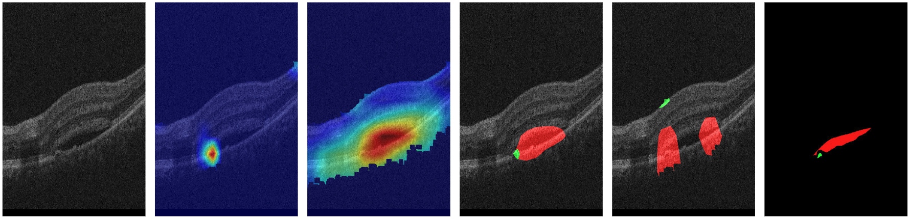
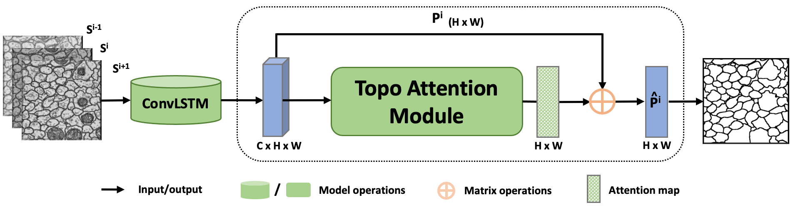
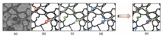

2026 / MIDL
Research
My research focuses on biomedical image analysis, including topology-preserving segmentation, learning with limited annotations, and domain adaptation. I also study how textual guidance and generative models can support medical imaging. My earlier work spans computer vision, probabilistic inference, and cognitive neuroscience.
Recent updates
- Text-Driven OCT Segmentation appeared in the April issue of IEEE JBHI.
- Reviewed for IEEE Transactions on Medical Imaging.
Publications
2026 / Medical Image Analysis
Topology-aware unsupervised domain adaptation for curvilinear structure segmentation
2025 / IEEE JBHI · Early Access
2025 / ACM/IEEE CHASE
Topology-Aware Conditional Latent Diffusion for Multi-View Fundus Image Synthesis
2024 / Medical Image Analysis
Anomaly-guided weakly supervised lesion segmentation on retinal OCT images


We used cues about abnormal regions to locate lesions in retinal scans using image-level labels.
2021 / Image and Vision Computing
Novel features for art movement classification of portrait paintings
2021 / MICCAI
A Topological-Attention ConvLSTM Network and Its Application to EM Images


We shared structural information across neighboring slices to preserve connectivity in electron microscopy images.
2021 / IEEE ISBI
3D Topology-Preserving Segmentation With Compound Multi-Slice Representation


We used information from adjacent slices to preserve structural continuity in 3D segmentation.
2020 / Probabilistic Graphical Models
Solving multiple inference by minimizing expected loss
2019 / NeuroImage
Anterior insular cortex is a bottleneck of cognitive control
Peer review service
Selected venues where I’ve served as a reviewer.
Journal reviewer
- IEEE Transactions on Medical Imaging
- Medical Image Analysis
- npj Women’s Health
Conference reviewer
- NeurIPS
- IJCAI
- MICCAI
- IEEE ISBI
Talks & teaching
Jun 2025 / GenAI4SCH
Research presentation
Long oral research presentation at GenAI4SCH 2025.
2023 & 2024 / Invited talks
Weakly supervised methods for retinal disease segmentation
Department of Ophthalmology, Chang Gung Memorial Hospital. August 2023 and November 2024.
2018 – 2021 / Queens College, CUNY
Adjunct Lecturer
Taught Algorithmic Problem Solving, Object-Oriented Programming in C++, and Spreadsheet Programming.
Doctoral dissertation
2025 / CUNY Graduate Center